Cách đăng ký mã số thuế cá nhân online qua mạng năm 2026 mới nhất. Hướng dẫn đăng ký MST cá nhân trên phần mềm HTKK và trên Dichvucong. Kế toán Diệu Tâm xin hướng dẫn cách đăng ký MST cá nhân cho nhân viên trong Công ty:
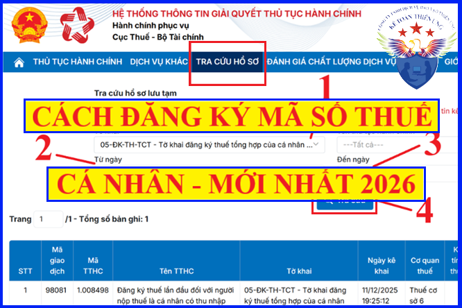
-------------------------------------------------------------------------------------------------
I. Hạn nộp hồ sơ đăng ký MST cá nhân cho nhân viên:
Tổ chức, cá nhân chi trả thu nhập có trách nhiệm đăng ký thuế thay cho cá nhân có thu nhập chậm nhất là 10 ngày làm việc kể từ ngày phát sinh nghĩa vụ thuế trong trường hợp cá nhân chưa có mã số thuế.
(Căn cứ theo Điều 33 Luật quản lý thuế số 38/2019/QH14)
Ví dụ: Nhân viên B nhận tháng lương đầu tiên tại Công ty TNHH Tư vấn & Đào tạo Diệu Tâm vào ngày 14/2/2026, với mức lương là 18tr, sau khi giảm trừ bản thân 15,5tr thì nhân viên A thuộc đối tượng phải nộp thuế TNCN (nghĩa là phát sinh nghĩa vụ thuế).
- Như vậy Công ty Diệu Tâm phải có trách nhiệm đăng ký MST cá nhân cho nhân viên B (chưa có MST) hạn chậm nhất là 10 ngày kể từ ngày phát sinh nghĩa vụ thuế là ngày 14/2/2026.
Cá nhân được cấp 01 mã số thuế duy nhất để sử dụng trong suốt cuộc đời của cá nhân đó. Người phụ thuộc của cá nhân được cấp mã số thuế để giảm trừ gia cảnh cho người nộp thuế thu nhập cá nhân. Mã số thuế cấp cho người phụ thuộc đồng thời là mã số thuế của cá nhân khi người phụ thuộc phát sinh nghĩa vụ với ngân sách nhà nước.
---------------------------------------------------------------------------------------------
II. Trình tự đăng ký MST cá nhân cho nhân viên:
- Cá nhân ủy quyền cho tổ chức, cá nhân chi trả thu nhập đăng ký thuế thay cho bản thân và người phụ thuộc nộp hồ sơ đăng ký thuế thông qua tổ chức, cá nhân chi trả thu nhập. Tổ chức, cá nhân chi trả thu nhập có trách nhiệm tổng hợp và nộp hồ sơ đăng ký thuế thay cho cá nhân đến cơ quan thuế quản lý trực tiếp tổ chức, cá nhân chi trả đó.
Cá nhân cần nộp cho Doanh nghiệp những mẫu sau:
+ Giấy tờ của cá nhân (bản sao không yêu cầu chứng thực Thẻ căn cước công dân hoặc Giấy chứng minh nhân dân còn hiệu lực (đối với cá nhân là người có quốc tịch Việt Nam); bản sao không yêu cầu chứng thực Hộ chiếu còn hiệu lực (đối với cá nhân là người có quốc tịch nước ngoài và người Việt Nam sống ở nước ngoài)).
+ Văn bản ủy quyền đăng ký MST cá nhân.
Tải về tại đây: Mẫu ủy quyền đăng ký mã số thuế cá nhân.
Doanh nghiệp cần nộp cho Cơ quan thuế những mẫu sau:
+ DN tổng hợp thông tin đăng ký thuế của cá nhân vào tờ khai đăng ký thuế Mẫu số 05-ĐK-TH-TCT và gửi qua mạng dichvucong.gdt.gov.vn, chi tiết có 2 cách như sau:
---------------------------------------------------------------------------------------
Cách 1: Đăng ký MST trên HTKK rồi nộp qua mạng:
- Cách này thường áp dụng cho những DN muốn đăng ký MST cá nhân cho nhiều nhân viên nhé. Chi tiết như sau:
Bước 1: Tải và cài đặt phần mềm đăng ký thuế cá nhân HTKK
- Tải về tại đây nhé:
- Nếu máy tính bạn đã cài đặt phần mềm HTKK rồi thì bỏ qua bước này nhé (nhưng nhớ là phải làm trên phần mềm HTKK mới nhất nhé).
Chú ý: Bài viết này hướng dẫn đăng ký MST cho nhân viên trong Công ty nhé (tức là DN đăng ký MST cá nhân cho các nhân viên).
- Và DN phải có Chữ ký số (Token) thì mới đăng ký được nhé.
---------------------------------------------------------------------------------
Bước 2: Tạo hồ sơ đăng ký MST cá nhân trên phần mềm HTKK:
- Sau khi đã cài đặt xong phần mềm HTKK => Click vào biểu tượng HTKK trên màn hình. => Đăng nhập vào phần mềm bằng MST của Doanh nghiệp => Chọn "Thuế thu nhập cá nhân" => "05-ĐK-TH-TCT Tờ khai đăng ký thuế qua cơ quan chi trả" ban hành theo Thông tư 86/2024/TT-BTC
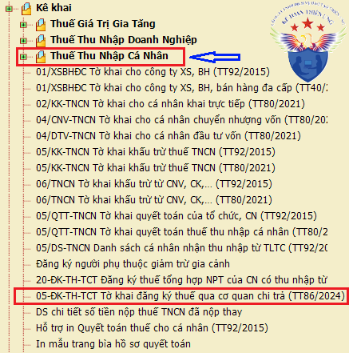
Tiếp đó các bạn nhập thông tin của Nhân viên muốn đăng ký MST cá nhân.
- Nhập thông tin theo như trên Căn cước công dân hoặc Hộ chiếu nhé.
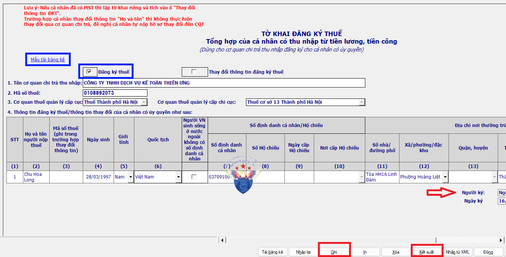
Nếu không gõ được tiếng việt: Các bạn vào Bảng điều khiển của Unikey => Mở rộng => Luôn sử dụng clipboard cho Unicode.
- Nếu muốn đăng ký cho cho nhiều người các bạn bấm Chuột trái vào dòng thứ 1 => Sau đó bấm phím "F5": Thêm dòng" nhé.
- Trường hợp muốn đăng ký MST cho rất nhiều nhân viên, các bạn có thể tải mẫu bảng kê Excel nhé, cụ thể như sau:
Bước 1: Bấm vào "Mẫu tải bảng kê" Chữ màu xanh, góc trên, bên trái của phần mềm HTKK => Để tải Mẫu bảng kê Excel chuẩn của phần mềm HTKK về máy tính.
Bước 2: Nhập (hoặc copy) thông vào vào bảng kê Excel đó.
Bước 3: Lưu file Excel đó (Chú ý: Không được đổi tên Excel đó).
Bước 4: Bấm vào "Tải bảng kê" trên phần mềm HTKK => Chọn file Excel vừa làm xong đó (Chú ý: Trước khi tải vào phần mềm HTKk thì tắt file Excel bảng kê đó đi nhé)
Chi tiết xem thêm: Cách tải file Excel vào phần mềm HTKK.
=> Sau khi khai xong thông tin các bạn bấm "Kiểm tra" để xem có sai sót gì không => Tiếp đó là bấm "kết xuất"
- Lưu ý khi bấm "Kết xuất":
=> Chọn "Kết xuất XML" => Để nộp bản này qua mạng
=> Chọn "Kết xuất Excel" để lưu tại DN (có thể sẽ giải trình hoặc in bản cứng để đi nộp trực tiếp, trường hợp Thuế yêu cầu hoặc sau này nhân viên nào đó thay đổi số CMND thì còn có số liệu để làm lại)
=> Sau khi đã kết xuất XML thành công => Tiến hành nộp qua mạng (trình tự xem Bước 3).
---------------------------------------------------------------------------------
Bước 3: Nộp hồ sơ đăng ký MST qua mạng dichvucong:
- Các bạn cắm Token vào máy tính và truy cập vào Dichvucong.gdt.gov.vn
=> Đăng nhập bằng Tài khoản chữ ký số (MST Doanh nghiệp bạn đã đăng ký nhé)
=> Chú ý: Đăng nhập bằng MST Doanh nghiệp và thêm chữ -QL nhé.
Ví dụ: 0108892073-QL (viết hoa hay viết thường đều được nhé).
=> Mật khẩu chính là Mật khẩu đăng nhập vào MST bình thường của DN đó nhé.
- Trường hợp khi đăng nhập bằng MST thường thì được => Nhưng thêm chữ -ql vào thì ko được => Thì các bạn lên google gõ: "Cách lấy lại mật khẩu trên dichvucong" nhé.
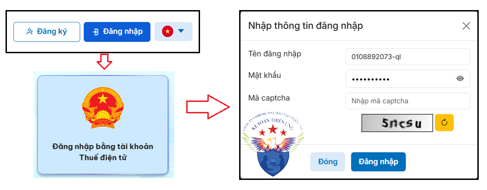
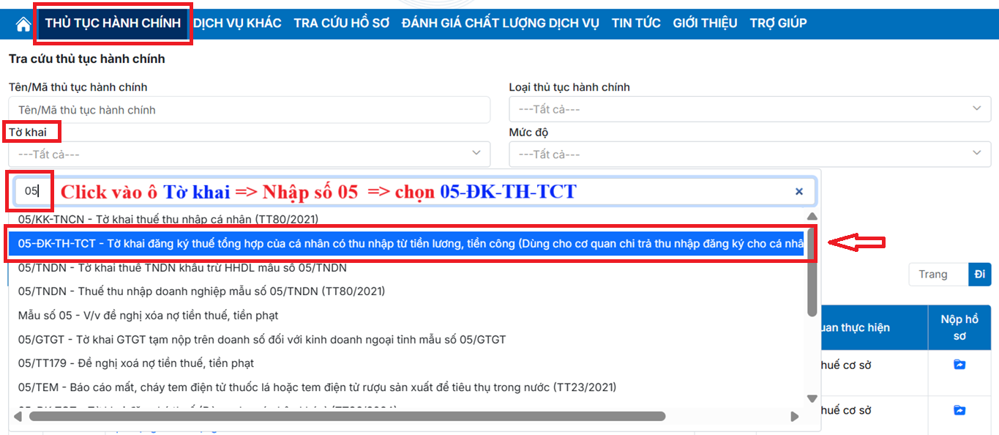
=> Bấm vào "Tìm kiếm"
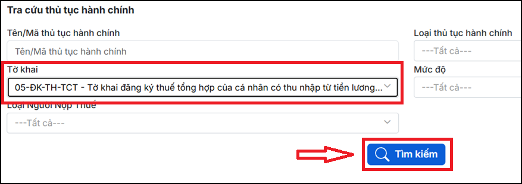
=> Bấm vào biểu tượng "File" ở cuối dòng thứ nhất - "Đăng ký thuế lần đầu đối với người nộp thuế là cá nhân, người phụ thuộc"
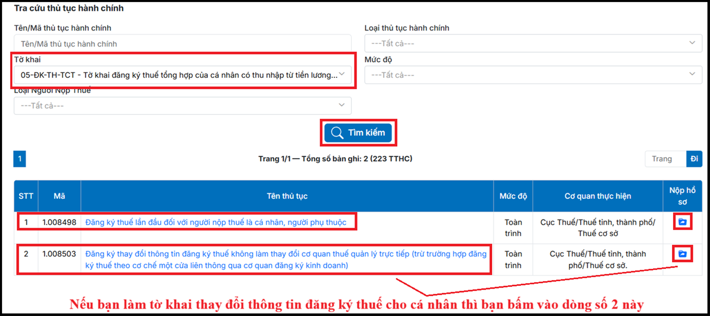
=> hiện ra mục Chọn hồ sơ kê khai: tích chọn vào mẫu "05-ĐK-TH-TCT"
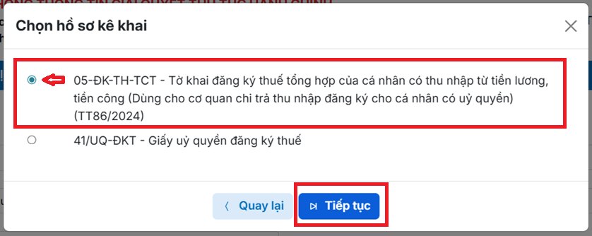
=> hiện ra mục Chọn hình thức nộp hồ sơ: tích chọn vào "Nộp XML"
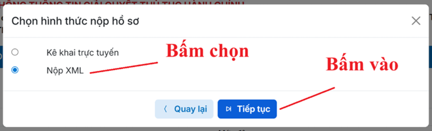
Lưu ý: Trường hợp các bạn muốn làm mẫu đăng ký trực tiếp luôn trên trang Dichvucong (mà không cần làm mẫu 05-ĐK-TH-TCT trên phần mềm HTKK nữa) => thì tại phần Chọn hình thức nộp hồ sơ này các bạn có thể bấm chọn luôn vào "Kê khai trực tuyến" và điền đầy đủ các thông tin 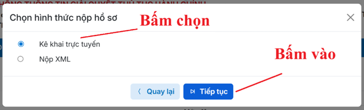 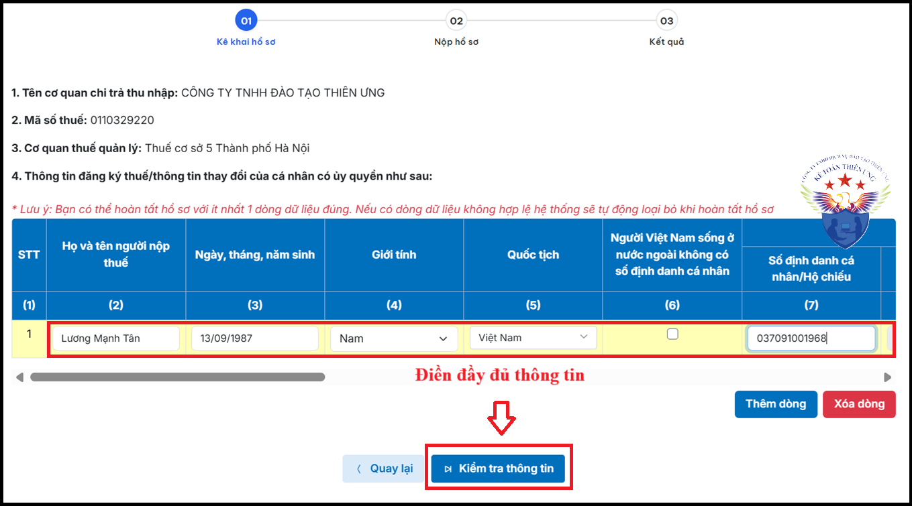
=> Chọn Tệp: các bạn tìm đến file xml đã làm và đã được kết xuất từ htkk trước đó => Bấm vào "Kiểm tra hồ sơ" 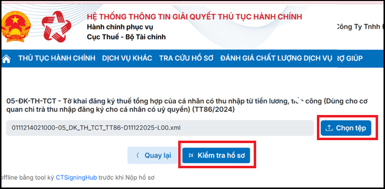 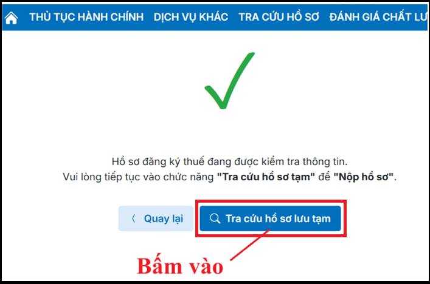 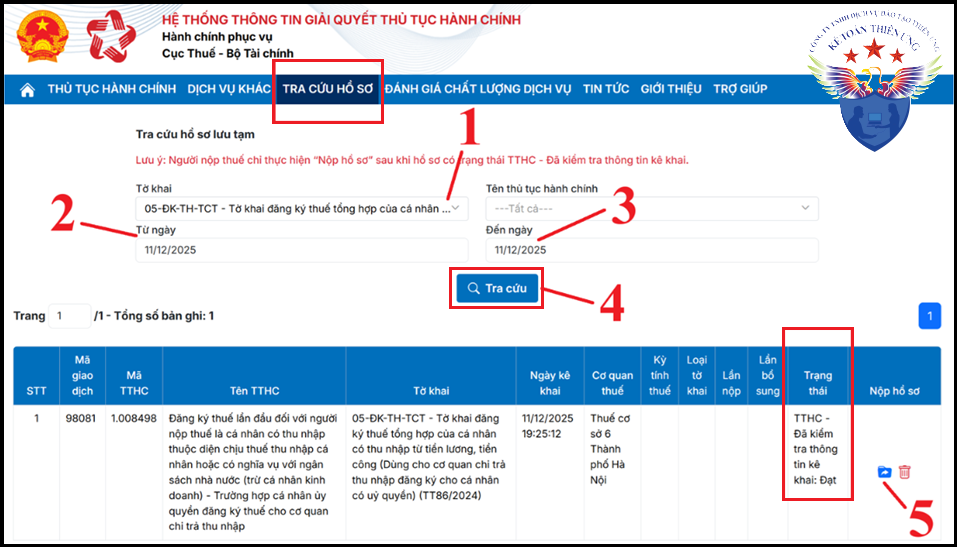
=> bấm vào "Tra cứu hồ sơ lưu tạm"
=> bấm vào "Nộp hồ sơ" => bấm vào "Hoàn thành kê khai" => Ký điện tử và Nộp hồ sơ đăng ký thuế qua mạng.
=> Như vậy là đã nộp xong hồ sơ đăng ký MST cá nhân cho nhân viên nhé.
---------------------------------------------------------------------------------------
Bước 4: Kiểm tra kết quả đăng ký MST cá nhân:
- Sau khi nộp xong Tờ khai 05TH => Các bạn bấm vào "Tra cứu hồ sơ" => Chọn "Tra cứu hồ sơ đã nộp" => tại mục "Tờ khai" các bạn chọn mẫu số "05-ĐK-TH-TCT" => sau đó khoảng thời gian mà bạn đã thực hiện nộp mẫu 05-ĐK-TH-TCT qua dichvucong => nhập đúng mã xác nhận => Bấm vào "Tìm kiếm" để kiểm tra xem tình trạng hồ sơ như thế nào nhé.
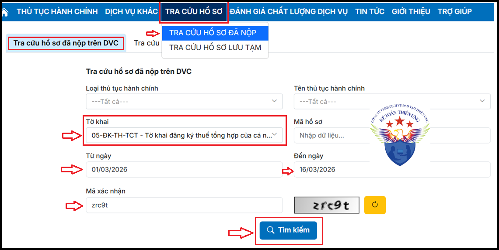
=> Như vậy là đăng ký xong MST cá nhân cho nhân viên nhé (các bạn có thể thấy: Kết quả trả về chỉ khoảng 20p sau khi nộp hồ sơ thành công nhé).
------------------------------------------------------------------------------------------------
Cách 2: Đăng ký MST trực tuyến trên thuedientu:
- Cách này thường áp dụng cho những DN muốn đăng ký MST cá nhân cho ít người (Làm cách này sẽ nhanh hơn việc làm trên phần mềm HTKK rồi nộp qua mạng nhé). Chi tiết như sau:
Bước 1: Nộp hồ sơ đăng ký MST trực tuyến:
- Các bạn cắm Token vào máy tính và truy cập vào ThuedientuDichvucong.gdt.gov.vn
=> Đăng nhập bằng Tài khoản chữ ký số (MST Doanh nghiệp bạn đã đăng ký nhé)
Chú ý: Đăng nhập bằng MST Doanh nghiệp và thêm chữ -QL nhé.
Ví dụ: 0106208569-QL (Chi tiết cũng như trên Cách 1 nhé)
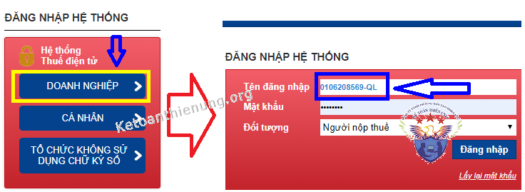
- Sau khi đăng nhập thành công => Bấm "Đăng ký thuế" => Đăng ký mới thay đổi tin của nhân qua CQCT => Lựa chọn "Hồ sơ đăng ký thuế - Mẫu 05-ĐK-TH-TCT" => Tiếp tục.
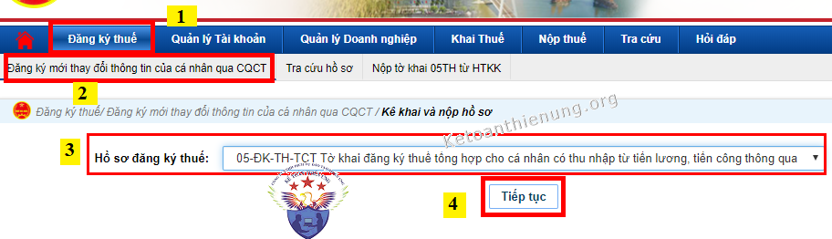
=> Tiếp đó các bạn khai thông tin của cá nhân muốn đăng ký MST cá nhân => Theo thông tin trên Giấy Chứng minh nhân dân hoặc Thẻ căn cước công dân.
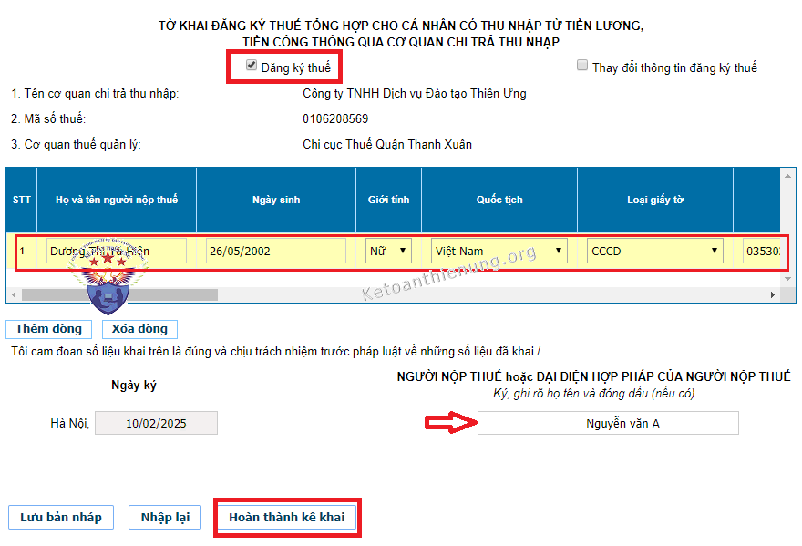
- Nếu muốn đăng ký từ 2 người trở lên => Bấm "Thêm dòng"
- Người đại diện pháp luật => Ghi tên Giám đốc nhé.
- Sau khi khai xong bấm "Hoàn thành kê khai" => "Nộp hồ sơ đăng ký thuế" => Ký điện tử.
=> Như vậy là đã nộp xong hồ sơ đăng ký MST cho nhân viên.
----------------------------------------------------------------------------
Bước 2: Kiểm tra kết quả đăng ký MST cá nhân:
- Sau khi nộp xong Tờ khai 05TH => Các bạn bấm vào "Tra cứu hồ sơ" => Chọn "Hồ sơ đăng ký thuế" => Chọn Mẫu 05-DK-TH-TCT => Tra cứu => Để kiểm tra xem tình trạng hồ sơ như thế nào nhé.
- Cũng như trên Cách 1 => Chỉ sau khoảng 30p - vài tiếng sẽ có kết quả ngay các bạn nhé
---------------------------------------------------------------------------------------------------
Trường hợp cá nhân thay đổi thông tin đăng ký thuế:
Ví dụ bạn nhân viên B đã đăng ký và được cấp MST theo CMND: => Nhưng chuyển từ CMND sang thẻ Căn cước công dân mới (hoặc đi làm lại CCCD và được cấp lại số CCCD mới).
Căn cứ theo Điều 36 Luật quản lý thuế số 38/2019/QH14:
- Trường hợp cá nhân có ủy quyền cho tổ chức, cá nhân chi trả thu nhập thực hiện đăng ký thay đổi thông tin đăng ký thuế cho cá nhân và người phụ thuộc thì phải thông báo cho tổ chức, cá nhân chi trả thu nhập chậm nhất là 10 ngày làm việc kể từ ngày phát sinh thông tin thay đổi;
=> Tổ chức, cá nhân chi trả thu nhập có trách nhiệm thông báo cho cơ quan quản lý thuế chậm nhất là 10 ngày làm việc kể từ ngày nhận được ủy quyền của cá nhân.
Hồ sơ thay đổi thông tin đăng ký thuế, gồm:
a) Cá nhân cần nộp cho Doanh nghiệp:
- Văn bản ủy quyền đăng ký thay đổi thông tin đăng ký thuế (Các Tải Mẫu ủy quyền đăng ký MST bên trên về, rồi thay đổi nội dung là được nhé)
- Bản sao các giấy tờ có thay đổi thông tin liên quan đến đăng ký thuế của cá nhân.
b) Doanh nghiệp cần nộp cho Cơ quan thuế:
- Doanh nghiệp tổng hợp thông tin thay đổi của cá nhân vào Tờ khai đăng ký thuế mẫu số 05-ĐK-TH-TCT ban hành kèm theo Thông tư 86/2024/TT-BTC gửi cơ quan thuế quản lý trực tiếp cơ quan chi trả thu nhập.
Trình tự thực hiện như sau:
Cách 1: Các bạn làm theo Cách 1 - Đăng ký MST trên HTKK bên trên nhé:
Cụ thể => Đăng nhập vào phần mềm HTKK => Vào phần "Thuế thu nhập cá nhân" => Lựa chọn Tờ khai “05-ĐK-TH-TCT Tờ khai đăng ký thuế qua cơ quan chi trả” => Khi màn hình hiển thị Mẫu Tờ khai đăng ký thuế => Thì các bạn Phải bấm chọn "Thay đổi thông tin đăng ký thuế".
=> Tiếp theo đó là điền thông tin theo thẻ Căn cước mới => Rồi kết xuất XML để nộp qua mạng.
Cách 2: Các bạn đăng nhập vào thuedientu.gdt.gov.vn bằng Tài khoản -QL
=> Vào mục "Đăng ký thuế" => Chọn "Đăng ký mới thay đổi thông tin của cá nhân qua CQCT" => Chọn hồ sơ đăng ký thuế Mẫu "05-ĐK-TH-TCT" => Tiếp tục
- Khi màn hình hiển thị Mẫu Tờ khai đăng ký thuế => Thì các bạn chú ý: Phải bấm chọn "Thay đổi thông tin đăng ký thuế".
=> Tiếp theo đó là điền thông tin theo thẻ Căn cước mới => Hoàn thành kê khai => Ký nộp.
=> Như vậy là các bạn đã nộp xong => Tiếp đó các bạn đợi khoảng 30p để kiểm tra kết quả nhé => Cách tra cứu các bạn xem lại bên trên nhé => Chọn "Tra cứu hồ sơ" => Tải file thông báo kết quả.
--------------------------------------------------------------------------------------------
Sau khi đã đăng ký xong MST cá nhân cho nhân viên, hàng tháng/quý các bạn phải kê khai thuế TNCN cho nhân viên trong Cty. Không phát sinh thuế TNCN có phải nộp Tờ khai tháng/quý đó không?.
=> Chi tiết xem tại đây nhé: Hướng dẫn kê khai thuế thu nhập cá nhân.
---------------------------------------------------------------
Kế toán Diệu Tâm chúc các bạn thành công!
Các muốn tìm hiểu sâu hơn về thuế TNCN như: Cách tính thuế, kê khai thuế hàng tháng/quý, quyết toán thuế TNCN cuối năm ... Có thể tham gia: Khóa học thực hành kê toán thuế thực tế chuyên sâu.
-----------------------------------------------------------